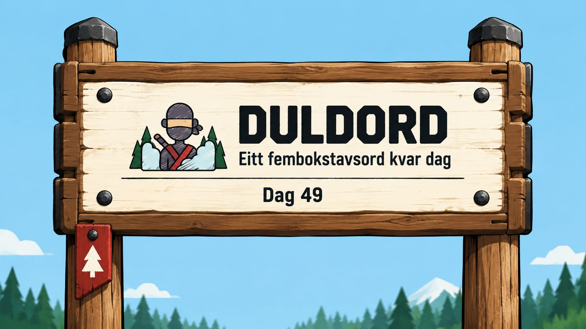
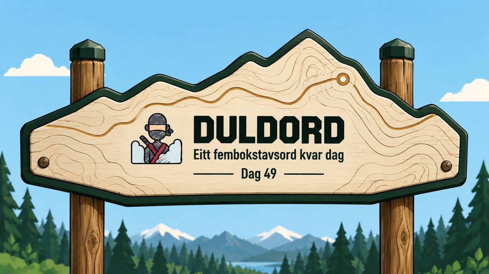
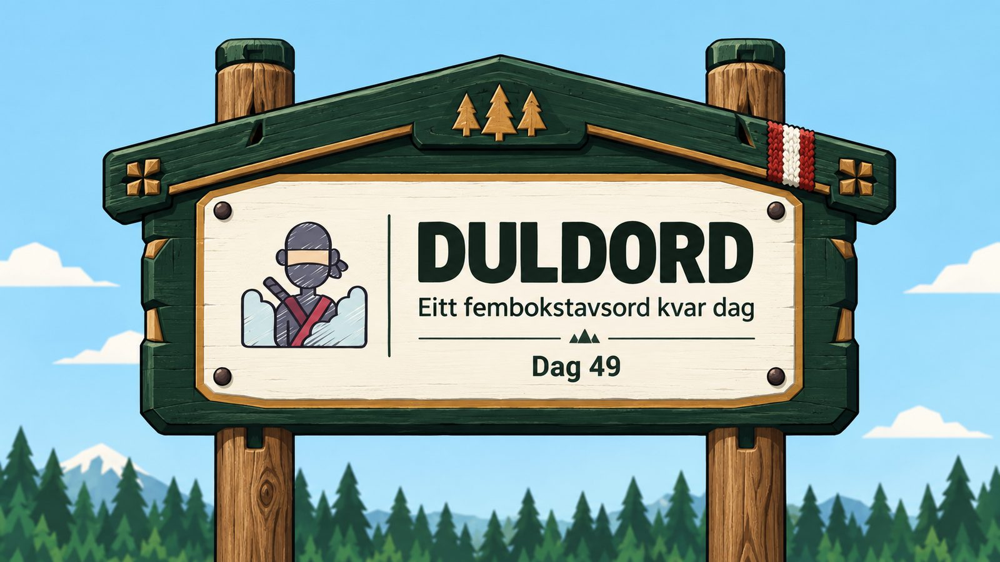
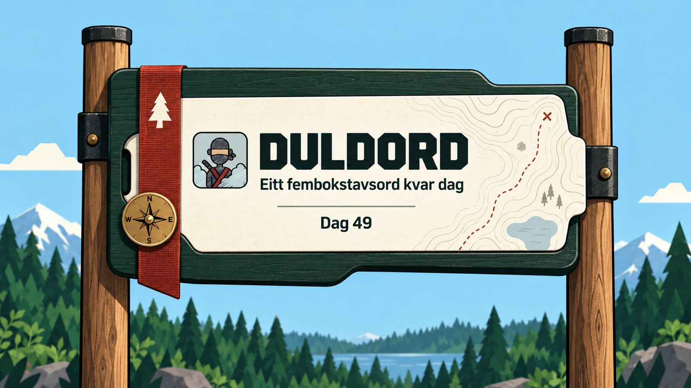
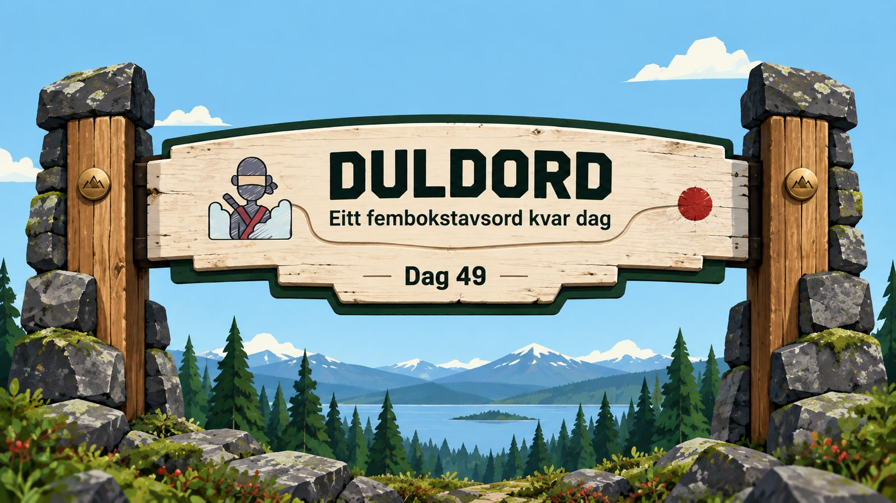

Løypeportalen
Eit solid innramma hovudskilt med lys front, presise snikkardetaljar og eit lite raudt løypemerke.

Ny konseptfase · bildegenerert art direction
Desse skissene utforskar form, materialbruk og merkevareuttrykk utan at HTML avgrensar designet. Når ei retning er vald, deler vi henne opp i gjenbrukbare biletdelar og byggjer den ferdige komponenten rundt ekte tekst og appinnhald.
Eit solid innramma hovudskilt med lys front, presise snikkardetaljar og eit lite raudt løypemerke.

Skiltforma følgjer ei fjellrute. Høgdelinjer og ei innfelt løype gjer sjølve landskapet til identiteten.

Ei lun og varig ramme inspirert av norske fjellstover, med mørkt tre, lys innfelling og vevd løypemerke.

Eit moderne feltkart i eit mørkt treetui. Kartlinjer, kompass og løypeband gjev eit meir produktdesigna uttrykk.

Eit ikonisk parkskilt spent mellom to vardeliknande steinfeste. Denne retninga har den sterkaste silhuetten.
